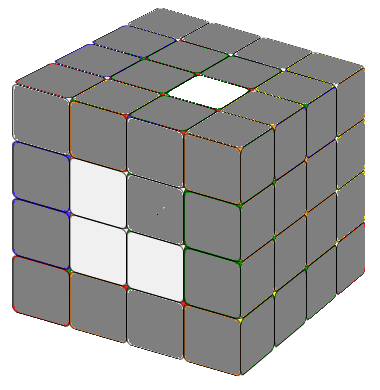
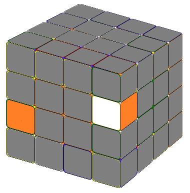
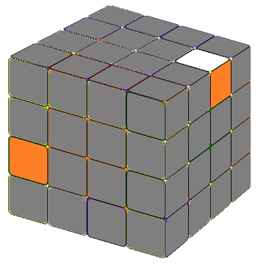
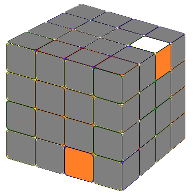
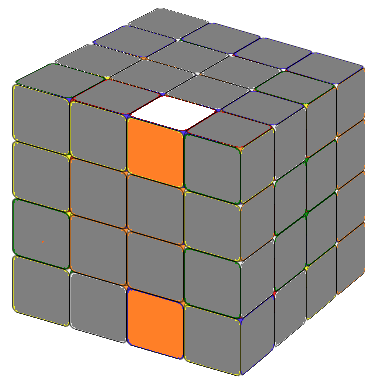
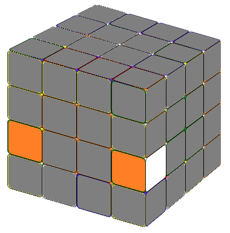

The first step is to fix the six 2x2 center blocks.
 Unlike 3x3 or 5x5 cubes whose center is fixed,
here we need to pay special attention to the relative positions of center blocks.
If the center block orientation is wrong, you won't be able to solve the cube.
If you are not sure of the orientation, put a solved 3x3 cube beside you as a reference.
Unlike 3x3 or 5x5 cubes whose center is fixed,
here we need to pay special attention to the relative positions of center blocks.
If the center block orientation is wrong, you won't be able to solve the cube.
If you are not sure of the orientation, put a solved 3x3 cube beside you as a reference.
It's not hard to solve the center blocks, practice makes perfect. If you encount some difficulties, the following 2 formulas will help.
Let's put the center block you want to solve on the front side (face).

(1) If the piece you needed is on the adjacent side: First, we maneuve the sides so the relative positions of the needed piece and the center block are same as the image on the left. Then apply the following formula. (2) If the pieces you needed is on the opposite side: First we turn the sides so the relative positions
of the needed piece and the center block are same as the image on the right.Then apply the following formula.
(2) If the pieces you needed is on the opposite side: First we turn the sides so the relative positions
of the needed piece and the center block are same as the image on the right.Then apply the following formula.
Combining edges is time consuming but it's very intuitive. First, we will find the two matching edge pieces and put them together on one side. There are two different situations.
In this case, the two edges are not line up(Fig.2.1). We could use some formula to convert situation A to situation B. There are many ways to do it, you could find it yourself. For example, in the following case :





In this case, the two edges are line up(Fig.2.2).
 We could turn the cube to convert situation B to situation A. There are many ways to do it. However, we will introduce another formula to solve this case directly. It will increase your speed and it is also used in 5x5 edge groups.
We could turn the cube to convert situation B to situation A. There are many ways to do it. However, we will introduce another formula to solve this case directly. It will increase your speed and it is also used in 5x5 edge groups.
Using these methods we could solve all 12 edge blocks.Now the 4x4 cube is reduced to 3x3 and we could solve it using the same way to solve 3x3 cubes.
Now we have the 4x4 cube with solved centers (2x2 blocks) and edges (1x2 blocks). We can solve it just like a 3x3 cube. However, you will sometimes encounter situations which will not happen in a 3x3 cube.
Assume that we have solved the white layer, the second layer, now we need to solve the up yellow layer. As a 3x3 we try to get a yellow cross by using the "Fruit" formula. Most of the time, it works. Sometimes it doesn't. If you cannot solve it, use the following formula.
You can see the animation here.
Yellow Cross Special CaseIf you only need to exchange two edges, using a very simple formula, the cube will become the familar 3x3 cube situation. This formula will move the second layer beside R (between L and R) alone. There is standard notation for this layer but instead of being buried in the notations, let's just call it Q (I chose the letter Q as in Question).
If you only need to exchange two corners, using the same formula, the cube will show you a familar status (as in 3x3 cube) again.
Now you have solved the 4x4 cube!